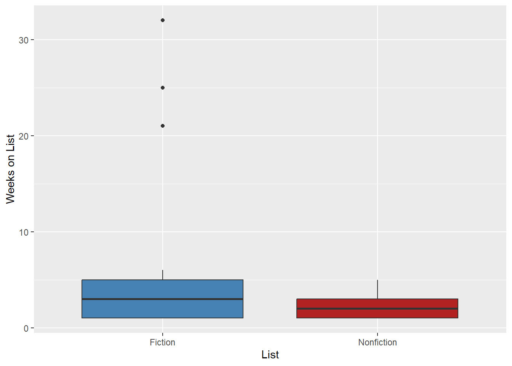
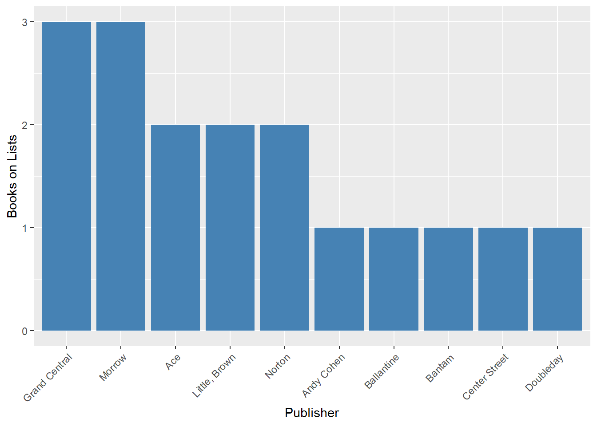

library(tidyverse)
library(httr2)
library(jsonlite)
library(gt)
api_key <- Sys.getenv("NYT_API_KEY")
if (api_key == "") {
stop("No API key found. Set NYT_API_KEY in your .Renviron file and restart R.")
}NYT Books API
Introduction
We will be using the New York Times Books API to look at the current best seller lists and try to answer a simple question: which hardcover fiction books are at the top of the list right now, and do fiction best sellers have more staying power than nonfiction best sellers? To do this we will request both lists from the API, parse the JSON that comes back, and transform each one into a clean data frame that we can combine and compare.
The API
The Books API has several endpoints for best seller lists, reviews, and list names. We will be using the Lists endpoint, which returns the books on a given best seller list along with details like rank, publisher, price, and how many weeks the book has been on the list. The endpoint looks like this:
https://api.nytimes.com/svc/books/v3/lists/current/{list-name}.json
The request uses the following parameters:
- list name (part of the url):
hardcover-fictionandhardcover-nonfiction. Usingcurrentin the url returns the most recent version of each list. - api-key: our personal NYT API key, which is never typed directly into the document.
Authentication
An API key shouldn’t be hard coded in a document that will be shared, so we will store ours in an environment variable called NYT_API_KEY. The easiest way to set this up is to run usethis::edit_r_environ(), add the line NYT_API_KEY=your_key_here to the file that opens, and then restart R. The code below reads the key and stops with a useful message if it cannot find one.
Making the Request
Since we need the same request for two different lists, we will write a function that takes a list name, builds the request, and returns the parsed books. The function uses httr2 to build the request and req_url_query to attach the key so it is passed along as a parameter without ever being printed. The JSON is parsed with simplifyVector = TRUE so that the array of books comes back as a data frame instead of a list of lists.
get_list <- function(list_name) {
resp <- request("https://api.nytimes.com/svc/books/v3/lists/current") |>
req_url_path_append(paste0(list_name, ".json")) |>
req_url_query(`api-key` = api_key) |>
req_perform()
Sys.sleep(1)
parsed <- resp |>
resp_body_json(simplifyVector = TRUE)
books <- as_tibble(parsed$results$books) |>
mutate(list = list_name,
list_date = parsed$results$published_date)
books
}
fiction_raw <- get_list("hardcover-fiction")
nonfiction_raw <- get_list("hardcover-nonfiction")
glimpse(fiction_raw)Rows: 15
Columns: 30
$ age_group <chr> "", "", "", "", "", "", "", "", "", "", "", "", "…
$ amazon_product_url <chr> "https://www.amazon.com/dp/168281808X?tag=thenewy…
$ article_chapter_link <chr> "", "", "", "", "", "", "", "", "", "", "", "", "…
$ asterisk <int> 0, 0, 0, 0, 0, 0, 0, 0, 0, 0, 0, 0, 0, 0, 0
$ author <chr> "Rebecca Yarros", "Louise Penny", "Abby Jimenez",…
$ book_image <chr> "https://static01.nyt.com/bestsellers/images/9781…
$ book_image_height <int> 400, 500, 400, 500, 500, 500, 400, 400, 400, 500,…
$ book_image_width <int> 312, 329, 312, 331, 329, 329, 312, 312, 312, 333,…
$ book_review_link <chr> "", "", "", "", "", "", "", "", "", "https://www.…
$ book_uri <chr> "nyt://book/ce1ec3e9-1213-5b7d-922f-c8859b1b06fe"…
$ contributor <chr> "by Rebecca Yarros", "by Louise Penny", "by Abby …
$ contributor_note <chr> "", "", "", "", "", "", "", "", "", "", "", "", "…
$ created_date <chr> "2026-10-07T18:21:49.532Z", "2026-10-28T17:27:52.…
$ dagger <int> 0, 0, 0, 0, 0, 0, 0, 0, 0, 0, 0, 0, 0, 0, 0
$ description <chr> "Thirteen short stories, set in the Empyrean worl…
$ first_chapter_link <chr> "", "", "", "", "", "", "", "", "", "", "", "", "…
$ price <chr> "0.00", "0.00", "0.00", "0.00", "0.00", "0.00", "…
$ primary_isbn10 <chr> "", "", "", "", "", "", "", "", "", "", "", "", "…
$ primary_isbn13 <chr> "9781682818084", "9781250412607", "9781538780046"…
$ publisher <chr> "Red Tower", "Minotaur", "Forever", "Little, Brow…
$ rank <int> 1, 2, 3, 4, 5, 6, 7, 8, 9, 10, 11, 12, 13, 14, 15
$ rank_last_week <int> 1, 0, 0, 0, 0, 3, 2, 0, 5, 6, 8, 4, 9, 12, 0
$ sunday_review_link <chr> "", "", "", "", "", "", "", "", "", "", "", "", "…
$ title <chr> "THRESHING DAY", "MISS WOLCOTT'S GHOST", "A MARRI…
$ updated_date <chr> "2026-10-07T18:21:49.532Z", "2026-10-28T17:27:52.…
$ weeks_on_list <int> 4, 1, 1, 1, 1, 4, 3, 1, 25, 3, 6, 2, 32, 21, 1
$ isbns <list> [<data.frame[1 x 2]>], [<data.frame[1 x 2]>], [<d…
$ buy_links <list> [<data.frame[5 x 2]>], [<data.frame[5 x 2]>], [<d…
$ list <chr> "hardcover-fiction", "hardcover-fiction", "hardco…
$ list_date <chr> "2026-11-08", "2026-11-08", "2026-11-08", "2026-1…Cleaning the Data
The raw result has a lot of columns we do not need and a few that are awkward to work with. The buy_links and isbns columns are nested, meaning each cell holds an entire data frame of links or ISBNs. Since we are not analyzing where to buy the books, we will drop them and keep the primary ISBN-13 as the identifier. We will also change the capitalization of the titles, convert the cost to a number or NA for 0, convert the rank_last_week to NA if 0 and add new_this week, and weeks on list is changed from 0 to 1 so we can start by counting the first week.
Once both lists are cleaned the same way we can stack them into one data frame.
clean_list <- function(df) {
df |>
select(list, rank, rank_last_week, weeks_on_list, title, author, publisher,
price, isbn13 = primary_isbn13, description) |>
mutate(
title = str_to_title(title),
price = na_if(as.numeric(price), 0),
new_this_week = rank_last_week == 0,
rank_last_week = na_if(rank_last_week, 0),
weeks_on_list = pmax(weeks_on_list, 1),
list = str_remove(list, "hardcover-") |> str_to_title()
)
}
best_sellers <- bind_rows(
clean_list(fiction_raw),
clean_list(nonfiction_raw)
)
best_sellers# A tibble: 30 × 11
list rank rank_last_week weeks_on_list title author publisher price isbn13
<chr> <int> <int> <dbl> <chr> <chr> <chr> <dbl> <chr>
1 Ficti… 1 1 4 Thre… Rebec… Red Tower NA 97816…
2 Ficti… 2 NA 1 Miss… Louis… Minotaur NA 97812…
3 Ficti… 3 NA 1 A Ma… Abby … Forever NA 97815…
4 Ficti… 4 NA 1 The … James… Little, … NA 97803…
5 Ficti… 5 NA 1 Chai… Lee C… Bantam NA 97982…
6 Ficti… 6 3 4 The … John … Doubleday NA 97803…
7 Ficti… 7 2 3 The … Freid… Poisoned… NA 97814…
8 Ficti… 8 NA 1 With… Briar… MIRA NA 97807…
9 Ficti… 9 5 25 The … Kathr… Spiegel … NA 97819…
10 Ficti… 10 6 3 Part… Barba… Harper NA 97800…
# ℹ 20 more rows
# ℹ 2 more variables: description <chr>, new_this_week <lgl>Analysis
First we can answer the original question about the top five hardcover fiction books. These are the books at the top of the current list, along with how long they have been there.
best_sellers |>
filter(list == "Fiction") |>
arrange(rank) |>
slice_head(n = 5) |>
select(rank, title, author, publisher, weeks_on_list) |>
gt() |>
tab_header(title = "Top Five Hardcover Fiction Best Sellers")| Top Five Hardcover Fiction Best Sellers | ||||
| rank | title | author | publisher | weeks_on_list |
|---|---|---|---|---|
| 1 | Threshing Day | Rebecca Yarros | Red Tower | 4 |
| 2 | Miss Wolcott's Ghost | Louise Penny | Minotaur | 1 |
| 3 | A Married Little Christmas | Abby Jimenez | Forever | 1 |
| 4 | The Family Cross | James Patterson | Little, Brown | 1 |
| 5 | Chain Reaction | Lee Child and Andrew Child | Bantam | 1 |
Now we can compare the staying power of the two lists. Looking at the average and the median number of weeks on the list will show whether fiction or nonfiction best sellers tend to stick around longer. We will also look at how many books on each list are brand new this week.
staying_power <- best_sellers |>
group_by(list) |>
summarise(
books = n(),
mean_weeks = mean(weeks_on_list),
median_weeks = median(weeks_on_list),
new_books = sum(new_this_week)
)
staying_power |>
gt() |>
tab_header(title = "Staying Power by List") |>
fmt_number(columns = mean_weeks, decimals = 1)| Staying Power by List | ||||
| list | books | mean_weeks | median_weeks | new_books |
|---|---|---|---|---|
| Fiction | 15 | 7.1 | 3 | 6 |
| Nonfiction | 15 | 2.3 | 2 | 5 |
ggplot(best_sellers, aes(x = list, y = weeks_on_list, fill = list)) +
geom_boxplot() +
scale_fill_manual(values = c("Fiction" = "steelblue", "Nonfiction" = "firebrick")) +
labs(x = "List", y = "Weeks on List") +
theme(legend.position = "none")
We can also see which publishers show up the most across both lists, since a few large publishers often control most of the best seller spots.
top_publishers <- best_sellers |>
count(publisher, sort = TRUE) |>
slice_head(n = 10)
ggplot(top_publishers, aes(x = reorder(publisher, -n), y = n)) +
geom_col(fill = "steelblue") +
theme(axis.text.x = element_text(angle = 45, hjust = 1)) +
labs(x = "Publisher", y = "Books on Lists")
Conclusion
The number one hardcover fiction book right now is Threshing Day by Rebecca Yarros. Fiction books have spent an average of 7.1 weeks on the list compared to 2.3 weeks for nonfiction, so we can see which type of book tends to have more staying power. The most common publisher across both lists is Grand Central with 3 books. These numbers are only a snapshot of the lists as of 2026-11-08, so a more complete answer would repeat the request over several weeks using the date version of the endpoint and see whether the pattern holds.